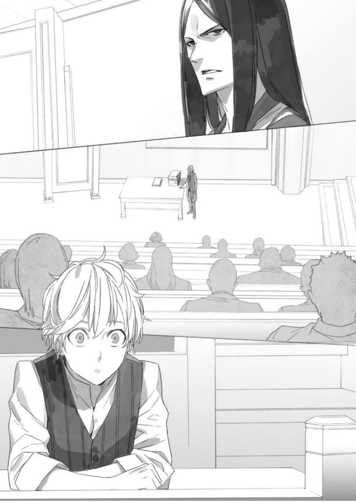
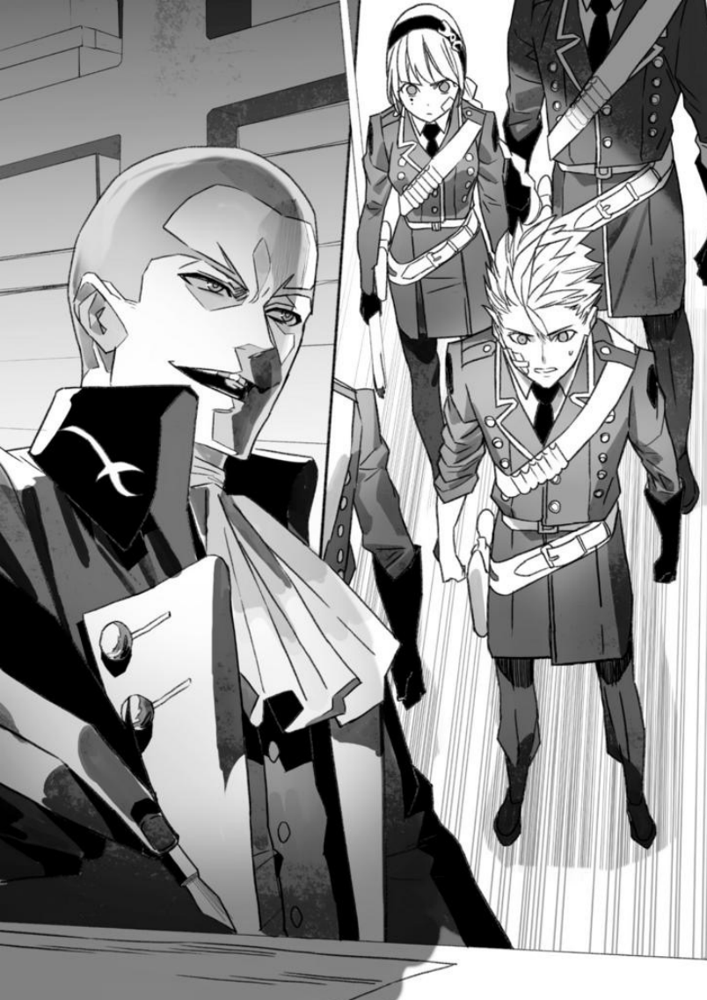

Capítulo 12: Dia 2, Meio-dia
Um Gênio Não se Faz em um Dia, Toda Magia Leva ao Desastre
A família Escardos era uma linhagem particularmente antiga, mesmo entre os magos da bacia do Mediterrâneo.
Um dos rumores dizia que eles já atuavam antes mesmo da formação da Torre do Relógio — ao lado do Mago Kischur Zelretch Schweinorg e de outros magos ativos nos séculos seguintes ao início da Era Comum. Ninguém na Torre do Relógio acreditava nisso e, mais importante ainda, tampouco os próprios herdeiros dos Escardos.
Afinal, por mais antiga que fosse a linhagem, ela nunca produzira resultados dignos de nota. Até o Brasão Mágico deles só tinha a idade a seu favor — a maior parte dos feitiços nele incorporados era indecifrável até para os próprios herdeiros, a ponto de seus descendentes suspeitarem que talvez fossem apenas blefes montados para parecer magia. Ainda assim, ele também incluía capacidades avançadas de preservação da vida, e assim conseguiram se agarrar à dignidade de uma família antiga.
A linhagem Escardos se sustentava produzindo patentes mágicas que diminuíam a cada nova geração. Mesmo na Torre do Relógio, eram ridicularizados como "velharias emboloradas".
Se ao menos nossos Circuitos Mágicos se desenvolvessem..., lamentavam-se os chefes da família Escardos havia séculos.
Estranhamente, os Circuitos Mágicos deles continuavam escassos ao longo das gerações. Não importava quão excelente fosse o sangue de mago introduzido na linhagem nem por quantas gerações isso fosse feito; o crescimento dos Circuitos permanecia quase imperceptível. Ainda assim, pensavam, era melhor do que declinar.
Em certo sentido, o fato de o Brasão Mágico deles ainda não dar sinais de ter chegado ao fim de sua vida útil, apesar da antiguidade da linhagem, era uma ameaça. Por isso, às vezes até eles acabavam discutidos como objetos de pesquisa dentro da Torre do Relógio.
Os Escardos consideravam isso preferível a ver o Brasão chegar ao limite, os Circuitos irem morrendo gradualmente e a linhagem ser engolida pela passagem do tempo — desaparecendo como magos — como acontecera com os Makiri. Trabalharam desesperadamente para consolidar sua posição como magos e evitar esse destino, ainda que outros magos rissem e dissessem que era um esforço inútil.
Depois de alguns séculos assim, nasceu na família Escardos uma "anomalia". A quantidade de Circuitos Mágicos dele era genuinamente uma ordem de grandeza maior do que a da geração anterior. Eram como capilares, fazendo Od circular por cada centímetro de seu corpo.
Talento genial no controle de energia mágica, originalidade para combinar feitiços do passado em uma nova magia singular e Circuitos Mágicos sem igual dentro da linhagem — era o nascimento de um sucessor verdadeiramente ideal. Um descendente com as capacidades que a família Escardos, estável, porém impotente, acreditava desejar acabou, no entanto, lançando-a num declínio vertiginoso.
Isso porque, ao mesmo tempo em que seus talentos começavam a desabrochar, ficou claro que ele carecia por completo da "mentalidade" que se poderia chamar de atributo mais importante de um mago.
Desde a infância, o garoto era capaz de ver "aquilo". Por isso, sempre achara "aquilo" perfeitamente normal e presumira que todo mundo também fosse capaz de ver. Logo percebeu, porém, que estava enganado.
Ele ainda não tinha nem dez anos quando lhe disseram que pertencia a uma linhagem de pessoas especiais chamadas magos. Ao descobrir isso, imaginou que era justamente por ser um mago que conseguia ver "aquilo". Conversando com os pais e com outros magos com quem eles tinham contato, porém, acabou entendendo que nisso também estava errado.
Parecia que seus pais não viam o mesmo mundo que ele. Quando o garoto percebeu isso, sentiu medo. Ainda assim, não tinha maneira concreta de comunicar a natureza desse medo aos outros.
Quando os pais notaram pela primeira vez a excentricidade do filho, perguntaram-se se ele não estava possuído por algum delírio. Depois de inúmeros exames, porém, foram obrigados a concluir que o garoto parecia estar falando a verdade.
A certeza de que o filho dos Escardos possuía poderosos Olhos Místicos provocou breve comoção, mas ambos os olhos do garoto se revelaram normais. O fato de ele claramente ser capaz de ver "aquilo" apesar disso deixou os magos ao redor intrigados.
Para o próprio garoto, era algo normal. Os olhares que recebia, porém, pareciam quase dizer: "Não conseguimos explicar como, apesar de humano, você está respirando por guelras." Aos poucos, ele passou a considerar desagradáveis as coisas que via.
Afinal, fora justamente por causa do que via que por mais de uma vez quase fora assassinado pelos próprios pais.
Ainda assim, também fora graças ao que via que sobrevivera, então não podia rejeitar totalmente "aquilo".
Ele amava a magia e amava os seres humanos — o que seria dele se acabasse odiando algo tão intimamente ligado a ambos? Essas ansiedades o afligiam desde a infância.
A caminho de certa festa num barco, encontrou uma mulher que parecia ser maga, ou algo próximo disso. Ela deve ter percebido as preocupações do garoto durante a conversa fiada que trocaram quando ele lhe explicou o caminho até o porto.
"Se você tem preocupações com magia", comentou ela casualmente ao embarcar num luxuoso navio de passageiros, "comece estudando isso. Se não pode contar com sua família, talvez devesse tentar a Torre do Relógio."
As palavras daquela maga se cravaram no coração do garoto. Se fosse para a Torre do Relógio, pensou, talvez pudesse compreender a si mesmo. Então procurou seus pais, que haviam acabado de fracassar em sua quinta tentativa de assassinato.
"Quero sair de casa e estudar na Torre do Relógio", disse o garoto. Ele ainda não tinha nem dez anos.
Como resultado, seus pais o expulsaram de casa para se livrar de um estorvo — sob o pretexto de revelar ao mundo seu prodígio e enviá-lo à Torre do Relógio.
Na prática, quando viram um garoto com um número anormal de Circuitos Mágicos que já dominava o uso da magia muito além da própria idade, muitos professores se empolgaram com a ideia de que surgira um gênio que deixaria seu nome na história da Torre do Relógio. As coisas, porém, não correram tão bem assim. O garoto de fato possuía Circuitos Mágicos como nunca se tinha visto, além do talento para controlá-los. E, ainda assim, apesar de seus Circuitos Mágicos de primeira linha e de seu senso para magia, nunca conseguiram corrigir seu temperamento idiossincrático nem sua ausência completa de mentalidade de mago.
Os instrutores aos poucos começaram a evitá-lo. Tinham diante de si uma pedra bruta da mais alta qualidade, mas eram incapazes de lapidá-la. Ver a pedra em bruto brilhar mais intensamente que as gemas polidas feriu o orgulho dos instrutores que tentavam promover os próprios interesses. No fim, acabaram expulsando o garoto.
Um professor chamado Rocco Belfaban esforçou-se pacientemente para reformá-lo enquanto ele era passado de mão em mão daquela forma. No fim, porém, até mesmo aquele velho professor passou a se sentir perplexo com a personalidade do garoto — e com outras coisas também.
Um dia, fez-lhe uma proposta: um recém-chegado excêntrico acabara de abrir uma escola. Embora fosse um dos Lords da Torre do Relógio, sua sensibilidade diferia um pouco da do mago médio. Talvez aquele homem fosse capaz de ensinar ao garoto o que ele desejava aprender.
E assim o garoto foi conhecer o Lord recém-empossado. Tinha certeza, em seu íntimo sombrio, de que havia sido expulso outra vez e de que seu próximo professor seria igual aos anteriores.
Talvez eu esteja doente. Eu me esforço tanto para agir como um mago de verdade, então por que não consigo? Aposto que mais um professor acabou me odiando. Quanto tempo será que vai levar até o próximo me odiar também?
Mesmo pensando essas coisas, o garoto deu o melhor de si para sorrir. Aplicou magia nos músculos do rosto, desesperado para manter uma expressão alegre. Embora nunca tivesse aprendido isso, sabia sorrir desde muito pequeno.
Para agir como um mago, o garoto despejou toda a sua energia na construção de um sorriso forçado. Repetiu o feitiço que fixava seus músculos num sorriso uma, outra, outra e outra vez. E, quando seu coração estava prestes a se despedaçar só de pensar que talvez passasse a vida inteira assim...
Aquele homem apareceu diante dele.
"Você é Flat Escardos? O garoto de quem dizem que consegue lidar com uma ampla variedade de magia, independentemente de Mana ou Od, e até sem conhecimento?"
Um jovem de expressão carrancuda e cenho franzido recebeu Flat quando ele entrou no aposento. Era alto demais, com cabelo comprido demais. O que mais chamou a atenção de Flat foi que, de todas as pessoas que se autodenominavam instrutores e que ele já conhecera, aquele homem tinha a menor concentração interna de energia mágica.
Flat observou com curiosidade uma pequena sombra espiando por trás do homem. Era uma criança da idade dele, fuzilando-o com os olhos e rosnando como um animal.
"Professor! Professor! O cheiro dele tá todo errado! Posso quebrar ele?" "Chega, Svin. Ele é um convidado. Ao menos por enquanto." O mago chamado de "Professor" voltou a examinar o garoto que acabara de entrar. Não havia nenhum sorriso falso em seu rosto quando falou.
"Por que você está fazendo isso com a sua cara? Está me testando, ou zombando de mim? Caso contrário, se esse é o seu jeito de se virar no mundo, trate de repensá-lo logo."
"O quê?" "Estou dizendo que crianças não deveriam usar magia para forçar um sorriso." "!" O garoto ficou chocado. Tinha certeza de que isolara perfeitamente todos os sinais de magia e que nenhum observador externo perceberia que ele a estava usando para sorrir.
Será que essa pessoa consegue ver as mesmas coisas que eu? Por um momento ele alimentou essa esperança, mas logo percebeu que estava enganado.
"O que foi? Tem alguma pergunta?" "...Sim, senhor. Como soube?" "Qualquer um percebe de relance. Quando você move o sorriso, seu zigomático menor, seu risório e seu levantador do ângulo da boca se movem numa ordem que ignora suas funções adequadas — prova de que você está usando magia para fixar sua expressão. Presumo que só tenha valorizado o resultado e tentado reproduzi-lo. Ao que parece, porém, negligenciou a observação do processo. Uma forma imatura de pensar, que leva a lidar com magia sem conhecimento. Reconheço seu talento, mas é melhor corrigir isso."
A explicação rápida não era o que o garoto esperava, mas ele não se desesperou. O mundo que aquele mago alto diante dele conseguia ver era diferente do seu. Ainda assim, teve a sensação de que o que aquele mago via também era diferente do que viam seus pais e os outros magos. Naquele momento, aquilo não passava de um leve pressentimento. Mesmo assim, o garoto desfez o feitiço do próprio rosto e curvou a cabeça diante do mago com o primeiro sorriso genuíno que dava em muito tempo.
"Meu nome é Flat! Vai ser um prazer assistir às suas aulas, Professor!" "...Eu recusaria — ou é o que eu gostaria de dizer —, mas você vem com uma carta de recomendação do sr. Belfaban, então não posso rejeitá-lo de imediato."
O mago suspirou e então lançou um olhar severo ao garoto — Flat — enquanto prosseguia. "Muito bem. A aula já vai começar. Sente-se num canto e pelo menos se acostume com o ambiente." Ao ouvir isso, a criança ao lado do mago — o garoto que ele chamara de Svin — arregalou os olhos, alternando o olhar entre o mago e Flat.
"O quê?!" gritou ele. "Ele vai mesmo ser meu calouro?! Esse cheiro espinhoso com certeza vai te arrumar problema, Professor! Melhor morder antes de ser mordido!"
"Uau. Morder? Você é quase como le chien... Ainda assim, você é meio legal!" "Viu só?! Ele fala um monte de absurdo, mas não cheira como se estivesse mentindo! O cheiro dele é de coisa toda quebrada! Perigoso! Destrói ele antes que ele destrua a escola!"
Ver Svin latindo como um animal de algum modo deixou Flat feliz. Ser alvo de uma emoção tão direta — mesmo que fosse hostilidade bestial — era uma experiência nova para ele. Era tão diferente da forma como os aprendizes dos departamentos anteriores o olhavam — à distância, como se estivessem observando algo inquietante.
Flat ficou extasiado. Seus olhos brilhavam. Fitou o rosto do garoto que exalava um cheiro animal que podia igualmente lembrar lobo, tigre ou leão e começou a murmurar alguma coisa.
"Lobo...? Beetho...? Não, talvez Le Chien no fim das contas..." "Espera aí! Nem pense que esses são candidatos ao nome que você vai me dar!" Svin parecia prestes a saltar sobre ele a qualquer instante. Suspirando, o mago pousou uma mão de contenção sobre sua cabeça.
"Cale a boca. Quer ser expulso?" Nesse momento, jovens magos começaram a entrar um a um. Ao que parecia, Flat não era o único novato na classe. "É o Lord...!", disseram alguns, com os olhos brilhando. "Aquele é o Lord...?", murmuraram outros, confusos. Todos tinham os olhos voltados para o mago.
Pouco depois de Flat se sentar num canto da sala, como ordenado, e de o garoto bestial se instalar bem no centro da primeira fila, o mago deu seu nome à turma.

"Meu nome até pouco tempo atrás era Waver Velvet... instrutor de terceira classe do Departamento de Magia Moderna."
Então pronunciou o nome do homem que mudaria o destino de muitos magos, Flat incluído, e entraria para a história da Torre do Relógio.
"Agora, sou o Segundo. Tomo emprestado o nome de Lord El-Melloi II."
Dia 2. Meio-dia. Rua Principal.
Dez anos haviam se passado desde seu primeiro encontro, e o destino de Flat certamente mudara. Sofrera uma cambalhota tão acrobática que ele saíra de alguém aos poucos expulso do mundo e empurrado para dentro de si mesmo para um participante de uma Guerra do Graal realizada na longínqua América. Em compensação, Lord El-Melloi II acabara com úlceras no estômago, mas essa já é outra história.
"Muito bem, vamos nessa, Berserker." "Sim, vamos." Flat estava naquele momento algemado a Jack, transformado num policial. Nem mesmo Flat era tolo a ponto de aparecer ali do jeito que era; além do disfarce, ajustara a própria circulação interna de energia mágica e preparara suas proteções para que os magos não os percebessem. Usava boné puxado para baixo, óculos escuros e uma jaqueta de couro que não combinava nada com ele.
"Ei", disse ele. "Me solta. Me solta. Sou inocente. Não matei minha esposa! O verdadeiro culpado é um homem com uma prótese no braço!"
"Sim... acho melhor você não falar." "S-sério?" Flat começara a gritar em tom absolutamente monocórdico. Bastou uma palavra de Jack, porém, para ele se calar e seguir cabisbaixo atrás dele.
Quando estavam prestes a atravessar a entrada, ele ergueu o olhar, apagando a expressão do rosto.
"...O que foi?" "Há proteções em muitas camadas. Talvez tenham sido quebradas recentemente? Tenho a impressão de que foram refeitas às pressas."
"Entendo... Quantos segundos vai levar?"
"Cinco bastam para enganá-las quanto à sua existência", respondeu Flat com facilidade, agachando-se ali mesmo.
"Qual é o problema?" perguntou um policial que por acaso passava pela entrada naquele instante.
"Ah, ele ficou bêbado e começou a fazer escândalo em pleno dia. Eu o trouxe, mas ele diz que não está se sentindo bem, então estou dando um descanso rápido pra ele."
"Entendi. Que trabalheira... Só não deixa ele vomitar aí, certo? A investigação do atentado terrorista de ontem ainda não terminou totalmente."
"Pode deixar. Não se preocupe." Enquanto a conversa se desenrolava atrás dele, Flat sussurrou baixinho seu encantamento pessoal.
"...Game select."
Flat continuou agachado e pousou a mão no chão, inserindo um novo feitiço na parte da proteção que tocara. Ele havia iniciado um hacking em grande escala na barreira.
Deixou sua própria energia mágica se infiltrar nas brechas das proteções intrincadamente dispostas, conduzindo "reparos" enquanto enganava as funções de detecção para que acreditassem que ele era seu criador. Concluiu o feitiço em cerca de quatro segundos e o encaixou nas proteções. Era como um programa automático que alteraria continuamente o significado delas conforme a vontade de Flat.
"Game over", murmurou Flat com um sorriso, erguendo-se devagar.
"Obrigado, policial. Já me sinto melhor." "Entendo. Então vamos." Não parece bêbado pra mim..., pensou o policial ao ver o rosto revigorado de Flat, mas os deixou como estavam. Presumivelmente tinha seus próprios deveres a cumprir.
E assim Flat e Jack entraram na delegacia. Flat podia ser chamado, com justiça, de o Mestre menos resoluto desta Guerra do Graal. Mesmo assim, deu um passo à frente. A resolução que guardava no coração era tão tênue que quase parecia transparente, mas isso lhe conferia certa pureza.
Era a decisão de enfrentar de frente aqueles que se arrastavam nas sombras desses acontecimentos.
Crystal Hill. Vinte metros abaixo da superfície.
A cidade de Snowfield não possuía metrô. Em vez disso, havia um imenso espaço subterrâneo situado cinquenta metros abaixo do centro da cidade — um espaço controlado pelos magos e pela agência governamental que construíra a cidade.
Entre esse espaço e a superfície, vinte metros abaixo do solo, havia áreas controladas de escala menor. Uma delas fora destinada ao "ateliê" de Caster — Alexandre Dumas père.
"Quer dizer, tem cassino, distrito da luz vermelha e restaurantes chiques bem em cima da minha cabeça, e eu nem posso sair pra aproveitar? Isso é que é crueldade. Pra que foi que eu apareci como Espírito Heroico, afinal?"
Dumas suspirou e voltou a atenção para os cerca de cinco jovens diante dele. "Quando se ganha dinheiro, é bom gastar. Entenderam? Dinheiro é como comida; estraga enquanto você fica pensando que é bom demais pra desperdiçar."
Reclamava, mas suas mãos não paravam nem por um instante. "Eu já disse pro mano — o chefe de vocês — antes. Antigamente eu peguei quase todo o dinheiro que tinha ganhado e construí a mansão dos meus sonhos. No segundo andar, enchi de bustos de todo tipo de gênio. Velho Hugo, Goethe, Homero, Shakespeare, o lote inteiro. E no lugar de honra tinha um busto meu, entenderam? Gastei uma fortuna pra fazer um escultor de primeira categoria produzir aquilo. Impressionante, não é?"
"Hum... Sim. Impressionante... em mais de um sentido." Dumas continuou fazendo a pena correr, sem sequer se virar diante da resposta desconfiada vinda de trás. Estava escrevendo frases em francês em algo parecido com um pergaminho.
"Aquele filho da puta do Balzac olhou pra minha casa e disse: 'É... basta uma olhada pra ver que você está brincando. Ainda assim, brincar tão bem assim até refresca.' Eu nunca entendi se ele estava me elogiando ou me insultando. ...Ah, é, e o mais chocante... 'ele' chegou até o portão da frente, embora provavelmente tenha ido embora de desgosto..."
"...'Ele'?" "Ops, escapou. Esqueçam isso", riu Dumas enquanto mergulhava a pena no tinteiro.
Nesse momento, enfim se virou para olhar para trás. "E então? Só cinco? O mano tá sendo bem cauteloso, hein?" Deu de ombros e voltou a atenção ao papel.
Uma das pessoas reunidas — um jovem que era membro do Clã Calatin — dirigiu-se a ele.
"...Perdão. A maior parte de nós foi despachada para a confusão no distrito industrial, então..."
O pedido de desculpas veio de um homem entre vinte e cinco e trinta anos. Ainda assim, seu rosto parecia mais jovem do que sua idade real. Ele ainda passaria facilmente por um policial novato. Era o oficial que perdera a mão direita abaixo do pulso na batalha recente contra o sugador de sangue. O ferimento estava coberto naquele momento por um gesso especial envolto em bandagens.
"Bom, não importa. Eu é que tenho sorte de vocês estarem aqui. E então? Conseguiram a 'permissão para lutar' do mano?"
"Ainda não..." O policial fechou o punho esquerdo com frustração. As palavras do chefe haviam sido: "A menos que prove que não vai atrapalhar, não vou colocá-lo de volta na linha de frente."
"Então qual é a sua razão pra lutar, afinal?", perguntou Dumas, sem parar sua "escrita".
"O quê...?" "Você ganhou a chance de ficar fora de uma guerra cheia de magos onde qualquer um pode morrer a qualquer momento. Então por que está tentando voltar? O que você ganha com isso?"
O policial que perdera a mão direita considerou a pergunta por um instante antes de responder com voz clara.
"Porque, como você mesmo disse, Caster... qualquer um pode morrer a qualquer momento." "Oh?" "Eu... Não, nenhum de nós que o chefe reuniu pensa em si mesmo como mago." "Então o que vocês são?", perguntou Dumas, ainda escrevendo. "Somos policiais", respondeu o homem. "..." "Numa situação em que qualquer um pode morrer a qualquer momento, nosso trabalho é salvar o maior número possível de pessoas."
Dumas ouviu aquela resposta, dada sem hesitação emocional alguma, e, rindo com prazer, lançou outra pergunta.
"Belas palavras. Elas enchem a sua barriga?" "Se você conseguiu construir uma mansão, eu consigo arrumar comida." "Ha! Olha só a boca desse sujeito. Meus romances são 'belas palavras'?" "!" Ao ver Dumas se levantar de repente, os cinco policiais não conseguiram evitar um suor frio. Era fácil cair na armadilha de considerá-lo um sujeito livresco só porque era romancista. Na realidade, porém, ele tinha um lado altamente ativo. Dizia-se que, mesmo já chegando aos últimos anos de vida, ele pessoalmente saíra para caçar feras selvagens a fim de escrever um livro de receitas. O físico intimidador que herdara do pai — um militar que servira sob Napoleão — fazia lembrar essa anedota. "Acho que até eu conseguiria vencê-lo numa briga", dissera o chefe. Para os policiais, porém, o resultado de uma troca franca de socos parecia bem menos certo.
Dumas, envolto naquela aura intimidadora, tomou o braço do policial que perdera a mão direita e...
"São, sim", deu de ombros ele, encaixando algo sobre o pulso direito do oficial. "Eu gosto de outras coisas também, mas... heróis que falam um monte de ideias grandiosas e levam tudo até o fim vendem como água nos jornais e no palco. Pronto."
Por fim soou um clangor satisfatório. O policial sentiu uma leve pressão e o peso adequado no pulso direito.
"Isto é..." Presa ao braço direito do oficial havia uma mão protética perfeitamente ajustada. "Ela tem um mecanismo especial; depois eu conto tudo." "Não, mas... o chefe ainda não..." O oficial encarou a mão, confuso. "John Wingard", chamou Caster, voltando à sua escrita. "Vinte e oito anos. Nascido em Nova York. Tipo sanguíneo AB. Segundo filho de uma família de magos. Não herdou o Brasão Mágico."
"Quê...?" O policial encarou Dumas, chocado, ao ouvir seu nome e aquela sequência de informações pessoais. Dumas abriu um largo sorriso e continuou.
"Desculpe, mas eu fiz minha lição de casa sobre todos vocês. Você perdeu a mãe quando era criança, e foi por isso que virou policial. Acertei, John? Não queria que mais ninguém compartilhasse da sua dor?"
"...Eu não estava pensando em nada tão nobre assim. Eu só queria vingança..." "Oh, não precisa confirmar. Você tem de me permitir minhas belas palavras. Vingança serve." Sorrindo, Dumas tornou a mergulhar a pena no tinteiro para registrar uma nova "história". "Quando eu estava serializando Monte Cristo no jornal, todo mundo, de camelô a ministro de Estado, queria saber no que o vingador ia dar. Você também vai virar assunto... Afinal, vai usar essa mão — essa lenda — que eu cozinhei. Vai ser uma mentira se você não causar algum impacto.
"Vai lá e diz ao mano, John: 'Eu vou provar que não vou atrapalhar'!"
A delegacia. O gabinete do chefe.
"...Isso não faz sentido." O chefe releu o relatório sobre o incidente da manhã no distrito industrial, confuso. Parecia que Francesca e seu Servo haviam feito alguma coisa — ele não fazia ideia do quê — para pôr fim àquele desastre que ameaçava se espalhar pela cidade inteira. Bazdilot e Haruri haviam seguido caminhos separados. Ambos escaparam da rede de vigilância da polícia. O mesmo valia para a homúnculo dos Einzbern, e era desconhecido o motivo de ela estar cooperando com Haruri. Ainda assim, não era isso que pesava na mente do chefe.
Os membros do Clã Calatin haviam combinado grandes barreiras com ordens físicas de evacuação para tentar limpar o distrito industrial dos curiosos. Antes que tivessem oportunidade de colocar o plano em prática, porém, foi observada uma evacuação em massa dos moradores. O deslocamento de mais de cem mil pessoas que viviam dentro e ao redor do distrito industrial para o centro da cidade e as áreas residenciais foi relatado como algo semelhante a uma marcha de protesto. E, além disso, não houve relatos de tumultos nem de atos destrutivos por parte dos elementos mais problemáticos; eles não fizeram nada além de "evacuar".
"A Francesca fez alguma coisa...? Não... Aquela velha desgraçada ficaria mais feliz vendo as massas entrarem em pânico..."
Ela havia forçado o fim da situação para evitar descartar a cidade por enquanto, mas Francesca era, em essência, alguém que atiçava as chamas do conflito, não que as apagava.
Os evacuados ainda parecem estar zanzando pelo centro e pelas áreas residenciais... mas não há traço de magia em larga escala. Só me resta investigar se indivíduos estão sob influência de hipnose ou...
Uma batida à porta do gabinete interrompeu seus pensamentos. "Entre." O rosto familiar de uma de suas subordinadas surgiu pela porta aberta. Era a mulher que o auxiliava desempenhando o papel de secretária.
"Chefe, tenho um assunto urgente a relatar." "...O que foi?" "Flat Escardos está no saguão." "...O quê?" Ao ouvir aquilo, o chefe voltou a atenção não para o sistema de vigilância normal, mas para o monitor especial instalado em seu gabinete. Lá, pelos olhos de um familiar, estava o garoto dos relatórios. Por algum motivo, encontrava-se algemado e examinava o entorno com um ar que o fazia parecer extremamente suspeito.
O chefe estreitou os olhos ao ver o policial que o acompanhava. Não era um membro do Clã Calatin, mas um policial comum que deveria estar de folga naquele dia.
"Havia um relatório dizendo que, quando ele invocou seu Espírito Heroico pela primeira vez no parque, algo que parecia esse Espírito Heroico assumiu a forma de um policial, correto?"
"Sim, senhor. Acreditamos que ele tenha se infiltrado na delegacia na companhia do próprio Espírito Heroico. As proteções não reagiram, então talvez estejam isolando completamente a energia mágica."
"Entendo... Mais uma pergunta." "Qual, senhor?" perguntou sem expressão a policial que atuava como sua secretária. O chefe pareceu hesitar por um instante. No momento seguinte, a lâmina de uma espada japonesa estava apontada para sua garganta.
"Quem é você?"
O ateliê de Dumas.
"Hum, sr. Dumas... Como o senhor consegue criar Fantasmas Nobres?", perguntou um dos policiais.
Todos exibiam expressões tensas. Era a primeira vez que falavam cara a cara com um Espírito Heroico aliado. E tratava-se do grande escritor Dumas. Alguns deles haviam tido contato com Os Três Mosqueteiros ainda na infância. A maioria se lembrava de suas obras por filmes, séries de TV e até teatro de marionetes.
Dumas respondeu à pergunta fundamental feita por um desses "fãs" com um simples dar de ombros.
"Espíritos Heroicos podem ser surpreendentemente versáteis. O que você fez em vida, somado às lendas, fica aberto a interpretações ampliadas. No meu caso, eu não era mago nem nada disso quando estava vivo, mas usei o dinheiro que ganhei pra fazer um monte de coisa além de escrever."
Exibindo um sorriso de criança que acabara de fazer travessura, Dumas se lançou alegremente a um recital do próprio passado.
"Bom, quando meu camarada Garibaldi disse que ia unificar a Itália, eu resolvi dar uma forcinha. Levei armas pra caramba no meu navio, o Emma. Também publiquei um jornal. Em troca, ele me fez supervisor de um museu que escavava ruínas e relíquias do passado. Rapaz, aquilo me deu a chance de ver e tocar coisas fascinantes demais."
"Relíquias... do passado..."
"Então, isso se misturou à 'Criação de Ferramentas' e à 'Criação de Território' de um Caster, além das histórias sobre minhas encrencas legais, e virou uma skill. Não é magia; é a 'arte' de forjar o passado de um Fantasma Nobre — a sua história — e colá-lo de volta. As ruínas e relíquias em que toquei naquela época talvez tenham influenciado. Saíam umas coisas malucas pra caramba de Pompeia."
Parecia que ele próprio não entendia completamente por que adquirira essa habilidade. Ainda assim, com o conhecimento que o mundo lhe concedera como Espírito Heroico, era capaz de dominá-la com perfeição.
Dumas soltou uma risada nostálgica e retomou a escrita no pergaminho. "Naquela época eu também tive um monte de problemas. No fim, aquilo acabou me dando uma vingança indireta pelo meu velho."
O pai de Alexandre Dumas, Thomas, entrou para a história como um general renomado. O arsênico que lhe deram quando foi feito prisioneiro em Nápoles destruiu seu corpo e encurtou drasticamente sua vida. A invasão de Nápoles avançara com o apoio do filho do general Thomas, Alexandre. Moradores aliados demonstraram respeito decapitando diante dele uma estátua do rei que capturara seu pai. Foi uma vingança simbólica, ainda que indireta. Os policiais, porém, pareciam mais interessados no pai de Dumas do que nessa história de vingança contra o rei de Nápoles.
"Seu pai serviu sob Napoleão, não foi?" "Chega disso. Meu velho serviu sob Napoleão, mas teve uma pequena divergência de princípios com Sua Majestade Imperial. Veja, meu velho nasceu de um marquês qualquer — meu avô — e de uma escrava negra — minha avó. Aí o racismo fez o resto e usaram isso como desculpa pra chutá-lo pra fora. Graças a isso, meu velho definhou em desespero, enquanto minha mãe e eu fomos privados até mesmo de uma pensão do exército e deixados na pobreza."
"Então você guarda ressentimento de Napoleão?", arriscou um dos oficiais, interessado na história. Dumas não pareceu se importar. Na verdade, continuou sua reminiscência com orgulho.
"Essa é outra parte engraçada. Eu vi Napoleão só duas vezes depois que meu velho morreu... Mas essa história eu conto outra hora."
Dumas cortou a narrativa naquele ponto. Talvez sentisse que já tinha se alongado demais. Ainda assim, recordou outra anedota e começou a contá-la com gosto.
"Já que você tocou no assunto, eu ainda era um idiota quando meu pai morreu. Saí correndo pro segundo andar com uma arma, gritando que ia matar o Deus que matou meu velho! Burro, né? O moleque que eu era achava que, como o céu ficava em cima, a bala chegaria lá se eu atirasse do segundo andar."
"Bem... você era uma criança..." "Minha mãe então me deu um tapa e disse: 'Não precisamos de mais heróis arranjando briga com Deus!

'Heróis' acabam sendo arrastados pela história até morrerem e deixarem a família para trás... embora levem uns tapas se blasfemarem contra Deus antes disso. Entendeu?"
Dumas riu e deu de ombros, mas os policiais apenas trocaram olhares, sem saber se deviam rir daquela história ou não.
"Hm? O que foi?" "Ah, hum... A gente não sabia se devia rir, e..." "O quê, está tentando poupar meus sentimentos? Pode rir. Claro, muita gente hesitaria em contar uma história dessas, então talvez seja má ideia falar demais do passado. Ainda assim, se minhas reminiscências bobas ajudam alguém a matar tempo, eu conto quantas forem necessárias. Posso até dar uma apimentada nelas, se pagarem a taxa de oratória", cacarejou Dumas.
"Então?" perguntou aos policiais sem pausa. "Satisfeitos? Não vão ter muitas chances de conversar com um grande autor como eu. Se querem perguntar mais alguma coisa, a hora é agora."
Os policiais começavam a perceber que Dumas gostava de falar e a pensar que talvez devessem arrancar mais algumas fanfarronices dele para mantê-lo de bom humor... quando John, que flexionava a mão protética tentando se acostumar com ela, fez uma pergunta com expressão séria.
"...Nós podemos vencer?" "Sou um autor, não um tático nem um profeta." "Os Fantasmas Nobres que você criou são realmente incríveis. Mas nós, que os usamos, ainda somos humanos. Nós, imitações de Espíritos Heroicos, conseguimos derrotar aqueles... aqueles monstros só com Fantasmas Nobres?"
Ao ouvir isso, Dumas ficou em silêncio por um tempo. Depois estalou o pescoço e falou. "...Essa vai ser mais uma história do meu passado, mas..." "?" "Quando comecei, eu não tinha interesse nenhum em peças ou romances. Minha mãe me fazia ler nada além de velhas tragédias enfadonhas, e eu peguei aversão àquilo tudo... até o dia em que vi uma peça chamada Hamlet. Aquilo era diferente. Fiquei deslumbrado. Implorei por uma cópia do texto e o li tantas vezes que o decorei. Foi isso que me interessou pelo teatro. Foi um dos meus começos."
"Dá pra entender. Hamlet é a obra-prima de William Shakespeare." Dumas observou a concordância uniforme dos policiais com um largo sorriso. Então contou o resto da história com os olhos de uma criança que acabara de aprontar algo.
"A verdade é que aquele Hamlet tinha sido traduzido — ou adaptado — por um sujeito chamado Ducis. Enfim, ele estraçalhou o original e depois o reescreveu como tradução ao estilo dele. Eu fiquei chocado demais até pra ficar em pé quando li depois o texto real escrito por Shakespeare. Comparado ao original, aquilo que eu tinha visto era uma gambiarra que deixaria Shakespeare, ou qualquer fã do texto dele, furioso. Era um verdadeiro Hamlet-imitação."
Dumas soltou uma gargalhada. Então as risadas cessaram abruptamente, e ele virou o rosto para os policiais, os lábios retorcidos num sorriso largo.
"Mesmo assim, foi essa 'imitação' que mudou minha vida. Ninguém pode negar isso. Claro, provavelmente foi porque o original era bom demais. Ainda assim, fosse falso ou não, havia ali a verdadeira paixão do velho Ducis."
Então, entregando aos policiais as armas que terminara de reparar e aprimorar antes que percebessem, declarou com a alegria de um espectador assistindo a uma comédia, mas com a confiança de um diretor que controla o palco:
"Relaxem. Vocês ainda não sabem, mas a paixão do mano — do chefe de vocês — é de verdade. Continuem acreditando nele até o fim e vocês devem conseguir virar o jogo contra algumas lendas que só são genuínas."
A delegacia. O gabinete do chefe.
Enquanto a lâmina prateada reluzia, o tempo no gabinete do chefe pareceu parar. Foi a policial contra cuja garganta a katana estava apontada quem rompeu o longo silêncio. "O que quer dizer com isso, senhor? Sou Vera Levitt, uma das integrantes do Clã Calatin reunidas pelo senhor e sua subordinada leal. Devo considerar isso uma forma de assédio no local de trabalho?"
O chefe estreitou os olhos diante da fala impassível da mulher.
"Impressionante. Isso soa exatamente como algo que Vera diria." "Eu sou Vera." "Não. A verdadeira Vera está a caminho da sala de monitoramento." O chefe não disse por quê, mas tinha certeza. Todos os membros do Clã Calatin, ele incluído, tinham chips eletrônicos implantados nos ombros. O chefe podia ampliar com seu Od a distância entre esses chips e senti-los como se estivesse puxando um display de radar para diante dos olhos. Se confiasse nessa sensação, então o chip que naquele instante se dirigia à sala de monitoramento era o de Vera. Ele não detectava um único outro membro dentro do gabinete.
Quem quer que estivesse se fazendo passar por Vera parecia ponderar se as palavras do chefe eram ou não um blefe. Um momento depois, porém, suspirou e balançou a cabeça.
"Acabei de conseguir ler isso. Um chip IC... Não consigo copiar algo tão complicado instantaneamente. Acho que devíamos ter levado um pouco mais de tempo, Mestre."
Mestre. A tensão percorreu o corpo do chefe inteiro ao ouvir aquela palavra. Então, como que para aliviar essa tensão, uma voz suave ressoou em seu gabinete.
"Ah... Um chip IC? Eles têm algum tipo de dispositivo eletrônico embutido no corpo? Uau. Eu certamente não conseguiria perceber isso. Acho que me dei mal."
O chefe ouviu um suspiro vindo de um canto da sala e voltou o olhar naquela direção sem afrouxar a vigilância contra a entidade que assumira a forma de sua subordinada. Viu um Flat Escardos de ar abatido.
O que está nos monitores é uma distração feita com magia! O chefe entrou imediatamente em ação. Seu plano era usar as feras demoníacas embutidas nas proteções do gabinete para tomar o Mestre como refém e impedir o Servo de agir.
Se eles estão se infiltrando desse jeito, então a capacidade de combate real desse Espírito Heroico deve ser baixa. Consigo aguentar até meus homens voltarem...?
Se ativasse os sistemas defensivos internos das proteções, esse fato seria comunicado aos membros do Clã Calatin.
O chefe sacou imediatamente a pistola com a mão livre e disparou para baixo. No instante em que o tiro quase sem ruído atingiu o chão, uma ogiva especial ativou as proteções internas do gabinete, e três feras demoníacas se materializaram ao redor de Flat Escardos. Então...
"Play ball."
Flat murmurou algo e, de imediato, as feras abaixaram a cabeça diante dele. Chegaram até a abanar o rabo.
"O quê...?" E não foi só isso. A ativação de todos os outros feitiços defensivos foi anulada. Até o sistema de notificação de emergência do Clã Calatin foi desligado.
Inacreditável... Isto não é força bruta, como Assassin e o hematófago usaram dois dias atrás. Querem que eu acredite que ele reescreveu em tempo real uma magia já implantada e tomou todo o meu sistema para si?!
A bendita criança maldita. O chefe mal teve tempo de apreciar que o apelido dado ao garoto Flat Escardos não era exagero algum antes de...
"Game select."
Flat murmurou algo de novo, fechou a mão, e as feras demoníacas voltaram ao ponto onde haviam aparecido e se desmaterializaram. A situação foi restaurada por completo ao estado em que estava antes da ativação das proteções defensivas.
Mas ainda tenho chance de contra-atacar. No instante em que as feras demoníacas se materializaram, os membros do Clã Calatin dentro da delegacia devem ter sentido sua presença e corrido para o gabinete. Com cinco deles, incluindo a verdadeira Vera, ele seria capaz de assumir a vantagem até mesmo contra um gênio e seu Servo.
A pergunta é: consigo segurar esse Servo até lá...? Nesse momento, os olhos do chefe se arregalaram outra vez. Uma segunda figura idêntica estava parada ao lado da falsa subordinada para a qual ele apontava a espada.
"Por favor, abandone sua postura ofensiva, chefe de polícia Orlando Reeve", declarou num tom impassível, com voz idêntica à de Vera, a coisa que parecia ser o Servo de Flat.
Mais duas figuras idênticas surgiram na sala no intervalo daquela frase breve e apontaram para o monitor na mesa do chefe. O chefe se afastou delas, lançando um olhar ao monitor enquanto recuava num salto. O que viu o espantou.
Todas as câmeras mostravam Orlando Reeve e Vera. Eles apareciam em vários lugares, explicando alguma coisa individualmente aos diversos membros do Clã Calatin.
Isto... não é adulteração de imagem. Está disfarçado de Vera e de mim...? De tantos de nós assim?! O Espírito Heroico na forma de Vera falou, como se respondesse às dúvidas do chefe.
"A população desta delegacia agora é quarenta por cento eu."
O chefe olhou para o Espírito Heroico e para Flat e embainhou a espada em silêncio.
"Parece que vocês tomaram a iniciativa." "Oh, então o senhor entendeu?" "Entendi. Se vocês planejassem me matar, com certeza teriam formas mais simples de fazer isso. Estão exibindo parte do próprio poder para obter vantagem numa negociação. É assim que a máfia trabalha."
"Oh, não... Como as proteções normalmente estavam todas ligadas ao senhor, eu fiz com que elas assumissem a forma de um dos seus subordinados pra espionar melhor... Nunca esperei que o senhor percebesse, nem que as coisas acabassem parecendo uma briga. Desculpe por assustá-lo."
O chefe não conseguiu evitar franzir a testa ao ver Flat inclinando a cabeça. Já ouvira dizer que o garoto não tinha temperamento de mago. Mas por que um jovem tão gentil entraria numa Guerra do Santo Graal?
Ou será que tudo isso também é encenação? "E então? O que você quer?" "Bem, na verdade... pensei que, se há um Mestre na delegacia, eu devia vir conhecê-lo."
"...Espere. O que faz você pensar que há um Mestre na delegacia?" "Porque há muitos magos entre os policiais que andam pela cidade, e existe um sistema de vigilância mística centrado na delegacia. Além disso, achei que talvez o Saber que fez aquele discurso na TV estivesse aqui e..."
E eu ainda usei várias camadas de camuflagem só por precaução. O fato de o sistema de vigilância ter sido visto através fez o chefe franzir ainda mais a testa. Depois das habilidades estranhas que acabara de testemunhar, porém, aquilo mal o surpreendia.
"Há outro sistema de vigilância ligado ao... centro correcional da cidade? Isso é uma prisão? Mas este lugar era mais perto."
Deve ser a rede de vigilância de Faldeus. Então nem ele conseguiu. O chefe sentiu um pequeno alívio e passou a outra pergunta. "Se você veio propor uma aliança, então deve ter um alvo em mente. Quem é?" "O quê? Ah! Desculpe, não é... exatamente uma aliança." "?" "Nós, hum, viemos registrar uma ocorrência!" Ocorrência. Orlando, que havia sido chefe de polícia antes de se tornar mago, ouvira aquela palavra incontáveis vezes ao longo da vida. Agora, porém, franziu a testa como se nunca a tivesse ouvido antes.
"É que, veja", explicou Flat, "parece que alguém hospitalizada talvez seja uma Mestre da Guerra do Santo Graal."
"...O quê?"
"E, desde esta manhã, essa pessoa no hospital provavelmente está usando uma energia mágica muito fraca para se conectar a um número enorme de pessoas na cidade. Então, bem, achei que, se alguém ligado à polícia entendia de magia, era melhor avisar."
Hospital Central de Snowfield.
A médica responsável pelo caso de Kuruoka Tsubaki recebeu o aviso de que havia uma ligação telefônica para ela e se dirigiu ao escritório.
"Ah, doutora Levitt. É sua irmã." "Obrigada... Não é comum ela ligar." Ela pegou o fone das mãos de uma enfermeira e falou com a irmã mais nova, com quem ela própria havia entrado em contato só no dia anterior.
"Alô, Vera? Desculpe; estou no hospital, então não posso usar o celular." "Não tem problema. Parece que o caos na cidade continua, e eu fiquei preocupada com o que isso pode estar causando aí."
"Ah, houve um incêndio no distrito das fábricas, não foi? Aqui estamos bem, embora pareça que a ala psiquiátrica ainda esteja recebendo muita gente dizendo que parentes se recusam a deixar a cidade... O que será que está causando isso...?"
"A propósito, Amelia, como está a condição de Kuruoka Tsubaki?" "Ah, a pequena Tsubaki? Na verdade, ela tem estado ótima nos últimos dias. Tão ótima que não me surpreenderia se despertasse a qualquer momento. A única coisa estranha é uma marca esquisita na mão."
"Uma... marca?" "No começo achei que fosse uma piada de alguém, mas não sai esfregando e também não parece tatuagem... É como um hematoma. Mas foi desde que apareceu que o estado dela melhorou. Ah, não me entenda mal; não acho que ela tenha melhorado por causa do formato da marca nem por qualquer coisa ocultista desse tipo."
Depois de mais um pouco de conversa fiada, a médica — Amelia Levitt — encerrou a ligação. "Sua irmã não está subindo bem rápido dentro da polícia, mesmo sendo tão jovem?", perguntou a enfermeira.
"Está, sim. Ela herdou o jeito rígido de falar da nossa mãe, provavelmente porque cresceu com ela. Mas isso provavelmente a torna perfeita para a polícia."
Depois disso, Amelia seguiu em linha reta para o quarto de Tsubaki, murmurando para si mesma em voz baixa.
"Ainda assim, faz muito tempo que ela não demonstra interesse pela Tsubaki."
A delegacia. O gabinete do chefe.
A verdadeira Vera desligou o telefone e se voltou, inexpressiva, para o chefe. "Confirmei. Ao que parece, como o sr. Escardos disse, Selos de Comando se manifestaram em Kuruoka Tsubaki."
"...A pessoa que mencionou a marca no braço dela é sua parente, senhorita?" "Minha irmã. Como não possui aptidão mágica alguma, foi criada na ignorância do nosso mundo." Vera falou sem emoção. Flat sorriu para ela. "Então as duas trabalham ajudando pessoas. Isso é incrível." "...Obrigada. Não sei quanto a mim, mas minha irmã é realmente muito dedicada." Flat falava sem traço de sarcasmo, com sincero respeito. Vera agradeceu, ainda que de forma brusca. A julgar por suas palavras, provavelmente ficava mais contente ao ver a irmã reconhecida do que a si mesma.
Nesse momento, o chefe pigarreou. "Em outras palavras, ela invocou um Servo enquanto estava inconsciente... É isso?" "Sim, senhor. Dependendo das circunstâncias, é possível que o Espírito Heroico esteja agindo de forma independente."
"...Por que a garota, e não o sr. ou a sra. Kuruoka? Há alguma ligação com o fato de eles continuarem trancados em casa?"
Quanto mais as informações se organizavam, mais perguntas surgiam. Eles podiam usar a autoridade policial para interferir no hospital. Sem saber, porém, a identidade do Servo que enfrentariam, isso equivaleria a pular dentro de uma armadilha.
"Hum... Podemos usar magia em larga escala para explodir o quarto do hospital?" Ao ouvir a sugestão de Flat, o cenho do chefe se aprofundou. "...Quando chegar a hora, talvez não tenhamos outra escolha... mas eu selei um pacto com o Clã Calatin sob o pretexto de que seríamos justos. É meu trabalho garantir isso. A menos que eu possa ao menos declarar que sacrificar aquela garota é justo — que não existe outra saída —, prefiro deixar essa opção fora da mesa."
O chefe pronunciou essas palavras com amargura. Ao ouvi-las, Flat soltou um suspiro de alívio. "Entendo. Fico aliviado em ouvir isso!" "...?"
"Se vocês fossem do tipo de gente que faria isso como primeira opção, eu não conseguiria me aliar a vocês. ...Muitos daqueles 'magos dos magos' de que todo mundo fala provavelmente iriam direto a isso sem pensar duas vezes."
"...Você estava me testando?" O chefe observou Flat com um pesado suspiro. É verdade — talvez nem ele nem eu sejamos magos apropriados. Um mago que pusesse a racionalidade em primeiro lugar normalmente eliminaria sem piedade aquela garota inconsciente.
"...Mas aquilo que eu escolher no fim será a ordem em favor do maior número. Declaro desde já que, se os danos parecerem prestes a se espalhar ainda mais, sou capaz de apontar minha arma para aquela garota."
"Sim, senhor! Mas, contanto que o senhor diga isso com clareza, posso apresentá-lo sem medo!" "Apresentar...?" Sorrindo, Flat tirou um aparelho do bolso e o entregou ao chefe desconfiado. Era um celular, e já estava conectado a algum lugar.
"Ele tem vinte e sete camadas de criptografia do meu lado, e do outro lado também tomaram precauções, então acho que o senhor não precisa se preocupar com escuta mágica nem tecnológica. Pode falar."
"..." O chefe levou o telefone ao ouvido, como lhe fora indicado. O homem do outro lado da linha pareceu perceber isso e então falou.
"...Estou falando com Orlando Reeve, chefe de polícia responsável por coordenar o Departamento de Polícia de Snowfield?"
A voz soava jovem, mas intimidante à sua maneira. "Falando. Quem é?" perguntou o chefe, supondo que se tratasse de algum colaborador de Flat. Então, uma ideia lhe atravessou a mente, e ele congelou.
Não pode ser. O homem do outro lado do telefone abriu a boca para confirmar ou negar a suspeita do chefe. Simplesmente para informar a um dos mentores ocultos de Snowfield quem e o que ele era. Para pronunciar o nome de um homem que alteraria o destino de numerosos magos — incluindo Flat e o próprio chefe — e entraria para a história da Guerra do Santo Graal.
"Sou um instrutor de magia moderna da Torre do Relógio. Em geral, assumo o nome emprestado de Lord El-Melloi II... o Segundo."
"...!" O homem que acabara de se apresentar como uma das mais altas autoridades da Torre do Relógio acrescentou mais palavras ao chefe, arregalado de surpresa.
"A você, porém, darei um nome diferente:
"Waver Velvet... um simples mago de terceira categoria que certa vez participou da Guerra do Santo Graal de Fuyuki."